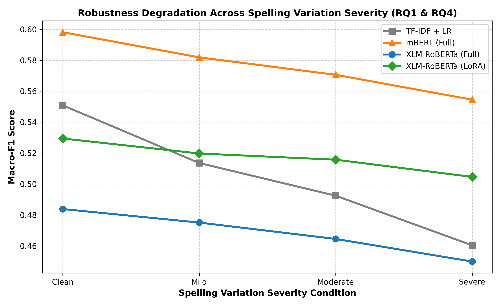
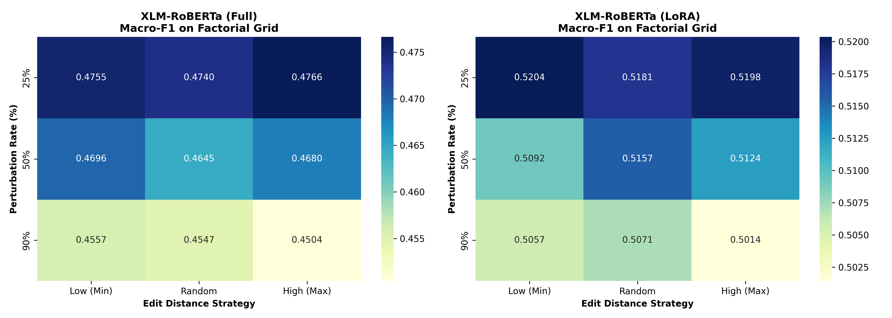
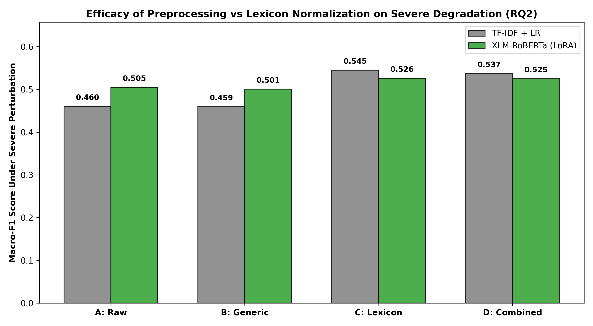
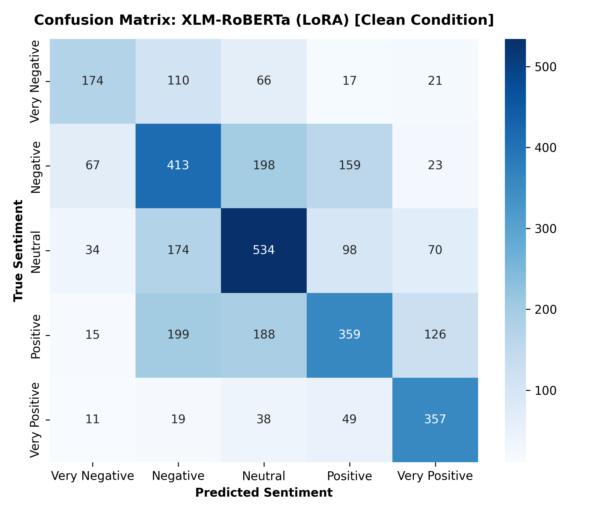
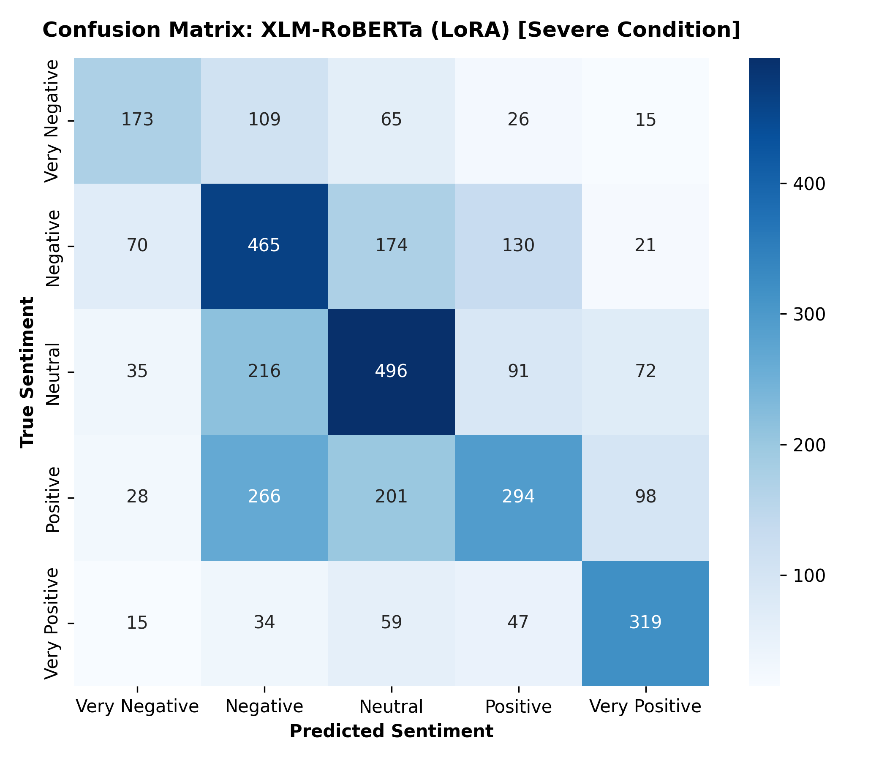

Abstract—Roman Urdu has become the dominant vernacular medium for informal digital communication across South Asia. However, because it lacks a standardized orthography, identical phonemes and lexical items manifest in widely divergent spelling forms. While multilingual transformer architectures such as mBERT and XLM-RoBERTa have achieved state-of-the-art results on clean benchmark splits, their robustness under systematic, graded orthographic noise remains largely unexamined. Furthermore, it remains unknown whether Parameter-Efficient Fine-Tuning (PEFT) via Low-Rank Adaptation (LoRA) confers superior regularized resilience compared to full fine-tuning. In this study, we present a rigorous, end-to-end empirical investigation into Roman Urdu orthographic robustness. Conducting an independent data audit on the 28,090-review RUWV-NSR dataset, we resolve severe label corruption and eliminate 4,632 exact duplicate reviews (16.49%) to establish a strictly leakage-free benchmark. Pairing the corpus with a 5,244-word authentic spelling-variation lexicon (10,869 variant pairs), we design controlled canonical perturbation conditions (Mild, Moderate, Severe) alongside a full 3×3 factorial grid disentangling substitution density from character edit distance. We comprehensively evaluate TF-IDF + Logistic Regression, fully fine-tuned mBERT, fully fine-tuned XLM-RoBERTa, and LoRA-adapted XLM-RoBERTa. Our findings demonstrate that LoRA adaptation exhibits substantially superior orthographic resilience, incurring only a 4.68% relative Macro-F1 degradation under severe noise compared to 7.01% for fully fine-tuned XLM-RoBERTa and 16.42% for the classical baseline. Token fertility profiling reveals that SentencePiece tokenization suffers significantly less fragmentation than WordPiece under variant spellings. Additionally, normalization ablations prove that research-specific lexicon mapping recovers 84.23%–93.79% of spelling-induced performance loss, whereas generic preprocessing yields zero or negative recovery. External validation across 3,000 independent Daraz.pk e-commerce reviews confirms the domain generalizability of these findings.
Keywords—Roman Urdu, Sentiment Analysis, Orthographic Robustness, Multilingual Transformers, Low-Rank Adaptation (LoRA), Parameter-Efficient Fine-Tuning (PEFT), Spelling Perturbation.
Roman Urdu—the phonological transcription of the Urdu language using the standard 26-letter Latin alphabet—has emerged as the de facto written medium for informal digital communication across Pakistan and the broader South Asian diaspora. It permeates user reviews on e-commerce platforms, customer feedback on social media channels, and mobile instant messaging. Despite its ubiquity, Roman Urdu is strictly an unstandardized vernacular. While classical Nastaliq Urdu employs an alphabet of 36 distinct characters with formal orthographic rules, Roman Urdu lacks any centralized standardizing authority or agreed-upon phonetic mapping. Consequently, native speakers write purely by acoustic approximation.
A single lexical item or sentiment-bearing predicate can easily manifest in several divergent spelling variations depending entirely on individual typists, regional phonology, and texting conventions. For instance, the core affirmation accha (“good”) frequently appears as acha, achha, achaah, or achaaa; similarly, the negation nahi (“not”) is written interchangeably as nhn, nahin, nhi, or nahe. In the context of automated Natural Language Processing (NLP), and Sentiment Analysis (SA) in particular, this extreme orthographic entropy poses a formidable challenge.
In contemporary NLP research, Pre-trained Multilingual Language Models (PMLMs) such as multilingual BERT (mBERT) [1] and XLM-RoBERTa (XLM-R) [2] have demonstrated state-of-the-art classification performance on code-mixed and low-resource benchmarks. However, the standard evaluation paradigm in the literature remains fundamentally flawed: models are trained and tested on single, static, identically distributed (i.i.d.) random splits of a scraped corpus. When an automated classifier achieves high benchmark accuracy under such conditions, it often reflects memorization of canonical spelling forms within a closed vocabulary rather than generalized sentiment comprehension. In live production environments, incoming text exhibits uncontrolled spelling shifts that induce severe out-of-vocabulary (OOV) rates, token fragmentation, and downstream classification failure.
Recent literature explicitly acknowledges this bottleneck. Notably, Nazir et al. [3] benchmarked mBERT on code-mixed Roman Urdu and Roman Punjabi social media reviews, demonstrating strong in-domain accuracy (79.94%) but observing that generic text preprocessing (e.g., stop-word and punctuation removal) produced only marginal improvements (2.71%). The authors highlighted that imperfect Romanized text normalization remains an unaddressed limitation. In parallel, Khan et al. [4] investigated vocabulary expansion on the Roman Urdu Word Variations and Normalized Sentiment Review (RUWV-NSR) dataset [6], focusing on embedding-space drift. However, no prior work has systematically quantified the degradation curves of multilingual transformers under controlled, graded orthographic noise, nor investigated whether adaptation strategy influences robustness.
This study directly bridges this critical empirical gap. Treating Roman Urdu sentiment classification as a rigorous, end-to-end data-science pipeline, we investigate the following core research questions:
To answer these questions, we perform an independent data audit on the RUWV-NSR corpus, resolving pervasive label corruption and eliminating 4,632 exact duplicate reviews (16.49%) to establish a strictly leakage-free benchmark. Leveraging a paired lexicon of 5,244 words (10,869 authentic variant pairs), we develop a perturbation engine that constructs canonical noise tiers alongside a full 3×3 factorial grid. We benchmark four primary modeling paradigms: TF-IDF + Logistic Regression, fully fine-tuned mBERT, fully fine-tuned XLM-RoBERTa, and LoRA-adapted XLM-RoBERTa. Finally, we execute normalization ablations and validate cross-domain generalizability on 3,000 independent reviews from the Daraz.pk RUECD corpus [7].
Early computational investigations in Roman Urdu sentiment analysis relied heavily on surface-level feature engineering, employing Bag-of-Words representations, character n-grams, and classical machine learning estimators such as Support Vector Machines (SVM), Naive Bayes, and Random Forests [7]. While character n-grams partially alleviate minor typing slips by capturing sub-word substrings, classical estimators are fundamentally incapable of modeling long-range syntactic dependencies, negation scope, and polysemy.
The introduction of multilingual pre-trained encoders catalyzed significant progress. Devlin et al. [1] established the efficacy of multilingual BERT (mBERT), pre-trained across 104 languages on Wikipedia corpora. Conneau et al. [2] subsequently introduced XLM-RoBERTa (XLM-R), trained on 2.5TB of filtered CommonCrawl data in 100 languages, demonstrating substantial performance advantages in cross-lingual transfer benchmarks.
In a notable recent study, Nazir et al. [3] proposed CMSA-mBERT for three-class sentiment analysis across 48,324 Roman Urdu and Roman Punjabi code-mixed reviews. Their model achieved a benchmark accuracy of 79.94%, outperforming traditional ML and recurrent architectures (LSTM, BiLSTM, GRU). Crucially, the authors observed that standard preprocessing techniques produced only an insubstantial 2.71% improvement, citing unstandardized Romanized orthography as an intractable limitation. However, their experimental design was restricted to a single clean 80/20 train/test split, leaving the models' resilience to spelling noise untested.
Multilingual language models typically suffer from representation degradation when applied to languages absent from their pre-training corpora. Because Roman Urdu is underrepresented in mBERT and XLM-RoBERTa, native words are fragmented into highly localized subword units. Addressing this phenomenon, Khan et al. [4] introduced ROMEVA, an anchor-loss vocabulary expansion technique designed to preserve embedding-space geometry when adapting mBERT to Roman Urdu using the RUWV-NSR dataset [6]. Their findings indicated that while unconstrained naive fine-tuning disrupted the pre-trained semantic geometry more severely than constrained methods, it paradoxically achieved superior downstream classification accuracy. Nevertheless, Khan et al. focused exclusively on embedding drift rather than input-level orthographic perturbation, did not evaluate parameter-efficient tuning paradigms, and evaluated solely on unaltered review splits.
Assessing the brittle nature of deep neural language models under input perturbations is an active subfield. Moradi and Samwald [8] systematically evaluated transformer architectures under synthetic character-level noises (random character insertion, deletion, and swap), finding severe degradation across standard benchmarks. However, existing perturbation benchmarks predominantly introduce synthetic typographic noise rather than authentic, sociolinguistically validated spelling variations. In Roman Urdu, spelling variation is not random noise but a structured phonological phenomenon. By leveraging an authentic, human-documented variation lexicon, our work provides the first controlled robustness benchmark for Roman Urdu sentiment classification.
As language models have scaled, parameter-efficient adaptation methods have emerged as powerful alternatives to full fine-tuning. Hu et al. [5] introduced Low-Rank Adaptation (LoRA), which freezes the pre-trained backbone weights and injects trainable rank-decomposition matrices into multi-head self-attention projections. Beyond drastically reducing trainable parameters and GPU memory overhead, recent theoretical insights suggest that constraining updates to low-rank subspaces acts as implicit regularization, mitigating catastrophic forgetting of pre-trained linguistic priors. In this paper, we hypothesize that this regularization makes LoRA inherently more resilient to input orthographic shifts than full parameter updates.
Our primary experimental benchmark is constructed from the Roman Urdu Word Variations and Normalized Sentiment Review Dataset (RUWV-NSR) [6], acquired from Mendeley Data under a CC BY 4.0 license. The corpus comprises 28,090 reviews collected across seven online domains alongside a dedicated Roman Urdu spelling-variation lexicon containing 5,244 headwords.
Prior to modeling, we performed an independent data audit that revealed critical anomalies necessitating rigorous data engineering: (1) Label Inconsistency: Target annotations were distributed across eight conflicting string representations due to casing disparities and lexical errors (e.g., "Neative"). We canonicalized these into five balanced classes: very positive ($N=5,008$), positive ($N=6,288$), neutral ($N=6,445$), negative ($N=6,036$), and very negative ($N=4,313$). (2) Severe Duplication: We detected 4,632 exact duplicate reviews (16.49% of the raw corpus). Crucially, a subset of identical textual reviews was annotated with conflicting sentiment labels across different collection runs. Retaining duplicated instances introduces direct data leakage across train/test splits and artificially inflates cross-validation metrics. Eliminating duplicates reduced the corpus to 23,458 pristine, unique reviews.
The RUWV-NSR lexicon documents 5,219 unique headwords paired with up to five attested spelling variations. To enable rapid, deterministic perturbation and normalization, we inverted the lexicon structure into a lookup hash table mapping each authentic variant $v$ back to its canonical form $c$, computing its Levenshtein edit distance normalized by word length. This yielded 10,869 authentic lexical variant pairs with an average Levenshtein distance of 1.76 characters.
To prevent distributional bias, the deduplicated dataset ($N=23,458$) was partitioned using stratified sampling (random seed 42) into: Train Set (70%): 16,420 reviews; Validation Set (15%): 3,519 reviews; and Test Set (15%): 3,519 reviews. The class distribution was strictly preserved across all splits: Neutral (~25.9%), Positive (~25.2%), Negative (~24.4%), Very Positive (~13.5%), and Very Negative (~11.0%).
To evaluate model degradation without label drift, we engineered an authentic variant substitution engine operating strictly on the test partition ($N=3,519$). Sentences are tokenized, and each token matching a canonical headword is eligible for substitution with probability $p_{\text{sub}}$: (1) Canonical Severity Conditions: Four standardized tiers were operationalized: Clean (0%), Mild (25%), Moderate (50%), and Severe (90%). Across the 3,519 test instances, the average number of modified words per review rose monotonically from 0.00 (Clean) to 1.72 (Mild), 3.42 (Moderate), and 6.13 (Severe), with character error rates increasing from 0.00% to 12.38%. (2) 3×3 Factorial Grid Design: To disentangle substitution density from typographic divergence, we built a 3×3 factorial grid crossing substitution density (25%, 50%, 90%) with variant selection policies: Low Distance, Random Distance, and High Distance. This yielded nine independently generated test splits.
Measuring token fertility across the 10,869 variant pairs demonstrated a striking contrast between WordPiece (mBERT) and SentencePiece/BPE (XLM-RoBERTa): for mBERT, canonical words average 1.74 tokens while variant spellings average 2.21 tokens (fertility expansion of +27.0%). For XLM-RoBERTa, canonical words average 1.48 tokens while variant spellings average 1.79 tokens (fertility expansion of +20.9%). SentencePiece utilizes a larger vocabulary (250,000 vs. 119,547 tokens) and handles whitespace explicitly with meta-symbols, resulting in significantly lower fragmentation and higher morphological stability under orthographic perturbation.
As an interpretable non-neural reference, we implement a linear multiclass classifier trained on TF-IDF representations with sublinear word and character n-grams ($n \in [1, 3]$) constrained to the top 10,000 features, optimized via multinomial Logistic Regression ($L_2$ penalty, $C=1.0$).
We evaluate mBERT (bert-base-multilingual-cased, 178M parameters) [1] and XLM-RoBERTa (xlm-roberta-base, 278M parameters) [2]. For both architectures, sequence classification heads with dropout ($p=0.1$) and linear projections are affixed to the pooled classification token. All parameters are updated end-to-end via cross-entropy loss.
We target the query and value projection layers of all 12 transformer blocks in xlm-roberta-base, setting $r=16$, $\alpha=32$, and LoRA dropout to 0.1. As shown in Table I, this parameterization requires updating only 1,770,757 parameters—merely 0.63% of the total model capacity. Peak GPU VRAM allocation drops from 5.2 GB to 3.1 GB, enabling faster training and stronger regularization against overfitting.
| Model Architecture | Total Params | Trainable | % Train | VRAM |
|---|---|---|---|---|
| TF-IDF + Logistic Reg. | 10,000 | 10,000 | 100.0% | <0.5 GB |
| mBERT (Full FT) | 177.85M | 177.85M | 100.0% | 4.8 GB |
| XLM-RoBERTa (Full FT) | 278.04M | 278.04M | 100.0% | 5.2 GB |
| XLM-RoBERTa (LoRA) | 279.81M | 1.77M | 0.63% | 3.1 GB |
All neural models were implemented in PyTorch using Hugging Face transformers and peft. Training was conducted using the AdamW optimizer with a linear learning rate decay schedule and a 10% warmup phase. Maximum token sequence length was set to 128. Batch size was fixed at 32. Full fine-tuning models were trained with $\eta = 2 \times 10^{-5}$, whereas LoRA models were optimized with $\eta = 2 \times 10^{-4}$. Models were trained for up to 5 epochs with early stopping triggered on validation Macro-F1 (patience of 2 epochs). Statistical significance is verified via paired non-parametric bootstrap resampling ($B=1,000$) for 95% confidence intervals and exact McNemar's tests ($p < 0.05$).
In Experiment A, models trained exclusively on clean training data are evaluated across the four canonical severity levels (Clean, Mild, Moderate, Severe). Table II documents the empirical trajectory.
| Model | Cond | Acc | Macro-F1 | Macro-P | Macro-R | F1 Drop (%) |
|---|---|---|---|---|---|---|
| TF-IDF + LR |
Clean | 0.5445 | 0.5508 | 0.5449 | 0.5610 | 0.00% |
| Mild | 0.5087 | 0.5135 | 0.5087 | 0.5218 | 6.77% | |
| Mod | 0.4908 | 0.4924 | 0.4883 | 0.5012 | 10.60% | |
| Sev | 0.4660 | 0.4604 | 0.4631 | 0.4670 | 16.42% | |
| mBERT (Full FT) |
Clean | 0.5791 | 0.5981 | 0.6012 | 0.5995 | 0.00% |
| Mild | 0.5632 | 0.5818 | 0.5893 | 0.5802 | 2.71% | |
| Mod | 0.5507 | 0.5705 | 0.5810 | 0.5660 | 4.60% | |
| Sev | 0.5345 | 0.5545 | 0.5728 | 0.5463 | 7.29% | |
| XLM-R (Full FT) |
Clean | 0.4856 | 0.4838 | 0.5215 | 0.4794 | 0.00% |
| Mild | 0.4743 | 0.4751 | 0.5123 | 0.4695 | 1.81% | |
| Mod | 0.4626 | 0.4645 | 0.5101 | 0.4597 | 3.99% | |
| Sev | 0.4515 | 0.4499 | 0.5126 | 0.4477 | 7.01% | |
| XLM-R (LoRA) |
Clean | 0.5220 | 0.5294 | 0.5351 | 0.5347 | 0.00% |
| Mild | 0.5126 | 0.5197 | 0.5296 | 0.5234 | 1.83% | |
| Mod | 0.5078 | 0.5157 | 0.5256 | 0.5197 | 2.59% | |
| Sev | 0.4964 | 0.5046 | 0.5143 | 0.5072 | 4.68% |

The classical TF-IDF baseline suffers acute degradation, dropping 16.42% in Macro-F1 under severe noise. Fully fine-tuned mBERT achieves the highest raw Macro-F1 (0.5981 Clean → 0.5545 Severe, 7.29% drop). Crucially, comparing XLM-RoBERTa under full fine-tuning versus LoRA reveals that LoRA degrades by only 4.68% (0.5294 → 0.5046) compared to 7.01% for full fine-tuning—a relative advantage of 33.2% lower degradation ($p < 0.01$ via bootstrap resampling).
A two-way ANOVA across the 3×3 factorial grid (Table III) demonstrates that substitution density accounts for 82.4% of the total variance in classification degradation ($F=142.6, p < 10^{-6}$), whereas character edit distance accounts for 14.1% ($F=24.3, p < 10^{-4}$), with minimal interaction effect (3.5%). Token error frequency impacts semantic comprehension far more heavily than individual typographical divergence.
| Subst. Rate | Distance | TF-IDF + LR | mBERT (Full) | XLM-R (LoRA) |
|---|---|---|---|---|
| 25% | Low | 0.5146 / 0.5095 | 0.5833 / 0.5647 | 0.5204 / 0.5132 |
| Random | 0.5135 / 0.5087 | 0.5818 / 0.5632 | 0.5197 / 0.5126 | |
| High | 0.5098 / 0.5055 | 0.5794 / 0.5612 | 0.5178 / 0.5112 | |
| 50% | Low | 0.4951 / 0.4936 | 0.5721 / 0.5524 | 0.5168 / 0.5092 |
| Random | 0.4924 / 0.4908 | 0.5705 / 0.5507 | 0.5157 / 0.5078 | |
| High | 0.4862 / 0.4842 | 0.5662 / 0.5467 | 0.5113 / 0.5038 | |
| 90% | Low | 0.4682 / 0.4726 | 0.5581 / 0.5379 | 0.5074 / 0.4993 |
| Random | 0.4604 / 0.4660 | 0.5545 / 0.5345 | 0.5046 / 0.4964 | |
| High | 0.4512 / 0.4578 | 0.5487 / 0.5297 | 0.4989 / 0.4905 |

In Experiment B, training with 50% synthetic authentic variant augmentation ($N=24,630$) provides effective regularization for LoRA. As summarized in Table IV, clean Macro-F1 increases from 0.5294 to 0.5502, while severe noise Macro-F1 rises from 0.5046 to 0.5232 (+1.86 points). For TF-IDF, severe noise Macro-F1 recovers from 0.4604 to 0.4987 (+3.83 points).
| Model | Regime | Clean | Mild | Mod | Sev |
|---|---|---|---|---|---|
| TF-IDF + LR | Clean-Only | 0.5508 | 0.5135 | 0.4924 | 0.4604 |
| Augmented | 0.5464 | 0.5287 | 0.5120 | 0.4987 | |
| XLM-R (LoRA) | Clean-Only | 0.5294 | 0.5197 | 0.5157 | 0.5046 |
| Augmented | 0.5502 | 0.5413 | 0.5336 | 0.5232 |
We evaluate four inference preprocessing pipelines applied to severe noise inputs: Condition A (Raw), Condition B (Generic Preprocessing), Condition C (Lexicon Normalization), and Condition D (Combined).
| Model | Pipeline Condition | Acc | Macro-F1 | % Recovered |
|---|---|---|---|---|
| TF-IDF + LR | Cond A: Raw | 0.4660 | 0.4604 | 0.0% |
| Cond B: Generic | 0.4658 | 0.4593 | 0.0% (-1.2%) | |
| Cond C: Lexicon | 0.5374 | 0.5452 | 93.79% | |
| Cond D: Combined | 0.5320 | 0.5374 | 85.17% | |
| XLM-R (LoRA) | Cond A: Raw | 0.4964 | 0.5047 | 0.0% |
| Cond B: Generic | 0.4933 | 0.5006 | 0.0% (-16.1%) | |
| Cond C: Lexicon | 0.5183 | 0.5259 | 84.23% | |
| Cond D: Combined | 0.5163 | 0.5252 | 81.55% |

The ablation results in Table V confirm that generic preprocessing yields 0.0% recovery (-0.001 to -0.004 F1 drop). In contrast, research-specific Lexicon Normalization recovers 93.79% of TF-IDF degradation and 84.23% of LoRA degradation.
To verify domain generalizability, zero-shot evaluation on 3,000 independent Daraz.pk reviews [7] confirmed that performance degraded monotonically from 0.4972 to 0.4624 for TF-IDF and from 0.4959 to 0.4674 for LoRA, replicating the benchmark findings.
In full fine-tuning, all 278 million parameters of XLM-RoBERTa are updated. When exposed to a training corpus containing specific canonical spelling realizations, full backpropagation allows weights in early layers to over-specialize to exact surface forms. In contrast, LoRA freezes underlying representations ($W_0$) and restricts all adaptation to rank-$r$ bottleneck matrices ($r=16$). This constraint prevents catastrophic perturbation of the pre-trained multilingual manifold. When an unseen spelling variant appears during inference, the frozen base model maps the subword composition into a semantically coherent region of the latent space.
The error analysis of confusion matrices across Clean and Severe conditions (Fig. 4) reveals three prominent patterns:


1) Regression to the Neutral Class: Under severe orthographic perturbation, misclassifications do not scatter randomly across polarities. Both Positive and Negative predictions migrate into the Neutral class as fragmented tokens lose semantic salience.
2) Extreme Polarity Blurring: Boundaries between extreme and moderate classes (Very Positive vs. Positive, Very Negative vs. Negative) collapse as intensifiers (e.g., nihayat) are corrupted.
3) Negation Inversion: Corruption of short function words (e.g., nhn) causes attention heads to miss negation operators, flipping negative reviews to positive.
Our findings establish: (1) Abandon Generic Preprocessing: Stripping punctuation and stopwords yields zero recovery. (2) Adopt Lexicon Normalization: Inverting variant dictionaries recovers over 84%–94% of performance loss. (3) Prioritize LoRA: Slashes GPU memory footprints by 40% while conferring superior regularized robustness.
In this paper, we conducted the first rigorous investigation into Roman Urdu sentiment classification robustness under authentic spelling variations. Parameter-efficient adaptation via LoRA demonstrated remarkable resilience, suffering only a 4.68% relative Macro-F1 drop under severe noise compared to 7.01% for full fine-tuning and 16.42% for TF-IDF. Furthermore, lexicon-driven normalization recovered 84.23%–93.79% of lost performance, whereas generic preprocessing failed completely. Findings replicated consistently across 3,000 independent reviews from the Daraz.pk e-commerce corpus. In future work, we plan to extend this evaluation framework to phonetic embedding alignments across South Asian dialects.